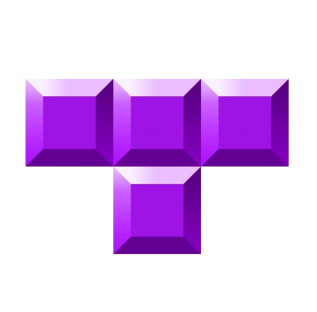
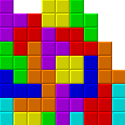
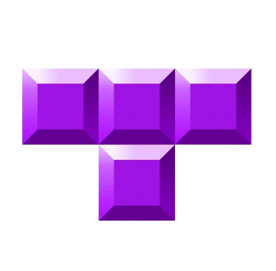
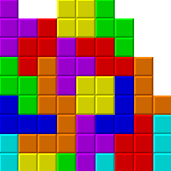

 Tron: Legacy is a 2010 science-fiction film that follows Sam Flynn, the son of computer programmer Kevin Flynn, as he’s pulled into the digital world his father created decades earlier. Inside the Grid, Sam discovers that his father has been trapped by CLU, a rogue program obsessed with achieving a “perfect” system.
With the help of the skilled warrior Quorra, Sam and Kevin must escape the Grid while confronting the dangers of its high-tech arenas, light-cycle battles, and oppressive regime. The movie blends cutting-edge visuals, an iconic Daft Punk soundtrack, and themes of identity, legacy, and the relationship between humanity and technology.
QUICK LINKS:
- LEGACY
- ARES
- WATCH
- PLAY
- READ